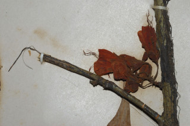
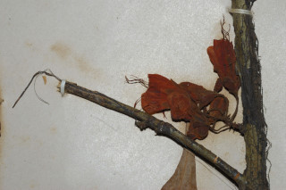

Trees up to 6 m tall.
6 ಮೀ. ಎತ್ತರದವರೆಗೆ ಬೆಳೆಯುವ ಮರಗಳು.
6 മീറ്റര് വരെ ഉയരത്തില് വളരുന്ന മരങ്ങള്.
சிறுமரம் 6 மீ. உயரம் வரை வளரக்கூடியது
Branchlets terete, glabrous.
ಕಿರುಕೊಂಬೆಗಳು ದುಂಡಾಗಿದ್ದು ರೋಮರಹಿತವಾಗಿರುತ್ತವೆ.
അരോമിലവും ഉരുതുമായ ഉപശാഖകള്.
சிறிய நுனிக்கிளைகள் குறுக்குவெட்டுத் தோற்றத்தில் வளையமானது, உரோமங்களற்றது.
Leaves compound, bifoliolate, alternate, distichous; rachis short, 0.5 cm long with obovate gland like structure above; stipules in pairs, persistent, foliaceous, lanceolate; leaflets subsessile, lamina 7-15 x 2-5 cm, lanceolate, apex acuminate, base oblique; midrib raised above; secondary_nerves 6-9 pairs; tertiary_nerves reticulo-percurrent.
ಎಲೆಗಳು ದ್ವಿಗರಿರೂಪಿ ಸಂಯುಕ್ತ ಮಾದರಿಯವು. ಎಲೆಗಳು ಪರ್ಯಾಯ ಜೋಡನಾ ವ್ಯವಸ್ಥೆಯಲ್ಲಿದ್ದು ಕಾಂಡದ ಎರಡೂ ಕಡೆಯ ಎದುರು ಬದರಿನ ಲಂಬ ಸಾಲಿನಲ್ಲಿರುತ್ತವೆ; ಅಕ್ಷದಿಂಡು ಸಣ್ಣ ಗಾತ್ರದಲ್ಲಿದ್ದು 0.5 ಸೆ.ಮೀ. ಉದ್ದ ಹೊಂದಿದ್ದು ಮೇಲ್ಭಾಗದಲ್ಲಿ ಬುಗುರಿ ಆಕಾರದ ರಸಗ್ರಂಥಿಯನ್ನು ಹೋಲುವ ರಚನೆಯನ್ನು ಹೊಂದಿರುತ್ತದೆ ; ಕಾವಿನೆಲೆಗಳು ಜೋಡಿಯಾಗಿದ್ದು, ಎಲೆಗಳನ್ನುಹೋಲುವಂತಿದ್ದು, ಭರ್ಜಿಯಾಕಾರದಲ್ಲಿದ್ದು ಶಾಶ್ವತವಾಗಿರುತ್ತವೆ; ಕಿರು ಎಲೆಗಳು ಸೂಕ್ಷ್ಮವಾದ ತೊಟ್ಟುಗಳನ್ನು ಹೊಂದಿರುತ್ತವೆ; ಪತ್ರಗಳು 7-15 x 2-5 ಸೆ.ಮೀ. ಗಾತ್ರ, ಭರ್ಜಿಯ ಆಕಾರ, ಕ್ರಮೇಣ ಚೂಪಾಗುವ ತುದಿ, ಓರೆಯಾದ ಬುಡವನ್ನು ಹೊಂದಿರುತ್ತವೆ; ಎರಡನೇ ದರ್ಜೆಯ ನಾಳಗಳು 6 ರಿಂದ 9 ಜೋಡಿಗಳಿದ್ದು ಮೂರನೇ ದರ್ಜೆಯ ನಾಳಗಳು ಜಾಲಬಂಧ ನಾಳ ವಿನ್ಯಾಸದಲ್ಲಿದ್ದು ಎಲೆದಿಂಡಿಗೆ ಅಡ್ಡವಾಗಿರುತ್ತದೆ.
ഏകാന്തരക്രമത്തില്, തിന്റെ രുഭാഗത്തുമാത്രയടുക്കിയ, ദ്വിപത്രക ബഹുപത്രം; 0.5 സെ.മി നീളമുള്ള ചെറിയ ബഹുപത്രാക്ഷം, മുകളില് അപഅണ്ഡാകാരത്തിലുള്ള ഗ്രന്ഥിപോലെയുള്ള ഭാഗത്തോടുകൂടിയതാണ്; കുന്താകാരത്തിലുളഅള, പത്രസമാനമായ, ഉറച്ചുനില്ക്കുന്ന അനുപര്ണ്ണങ്ങള് ജോഡികളായാണ് നില്ക്കുന്നത്; പത്രകങ്ങള് ഉപഅവൃന്തങ്ങളാണ്, പത്രഫലകത്തിന് 7 സെ.മി മുതല് 15 സെ.മി വരെ നീളവും 2 സെ.മി മുതല് 5 സെ.മി വരെ വീതിയും കുന്താകാരവുമാണ്. പത്രാഗ്രം ചെറുവാലോട് കൂടിയതാണ്, ചരിഞ്ഞിരിക്കുന്ന പത്രാധാരം; മുകളില് ഉയര്ന്നു നില്ക്കുന്ന മുഖ്യസിര; 6 മുതല് 9 വരെ ജോഡി ദ്വിതീയ ഞരമ്പുകള്; ജാലിക പെര്കറന്റ് വിധത്തിലുള്ള ത്രിതീയ ഞരമ്പുകള്.
கூட்டிலைகள், இரண்டு சிற்றிலைகள் கொண்டது, மாற்றுஅடுக்கமானவை, இருநெடுக்கு வரிசையிலையடுக்கம் (டைஸ்டிக்கஸ்); இலைக்காம்பு சிறியது, 0.5 செ.மீ. நீளமானது மற்றும் தலைகீழ் முட்டை வடிவம் கொண்ட சுரப்பி போன்ற பகுதி இலைக்காம்பின் மேற்பகுதியில் காணப்படும்; இலையடிச்செதில்கள் ஒரு ஜோடி, நிலையானது, இலைபோன்றது, ஈட்டிவடிவம்; சிற்றிலைகள் மிகச்சிறிய காம்புடையது, இலை அலகு 7-15 X 2.5 செ.மீ. ஈட்டிவடிவம், அலகின் நுனி அதிக்கூரியது, அலகின் தளம் சமமற்றது; மையநரம்பு மேற்பரப்பில் உயர்ந்தது; இரண்டாம் நிலை நரம்புகள் 6-9 ஜோடிகள்; மூன்றாம் நிலை நரம்புகள் வலைப்பின்னல் பெர்க்கரண்ட்.
Flowers in fascicled racemes on old wood.
ಹೂಗಳು ವಯಸ್ಸಾದ ಕೊಂಬೆಗಳ ಮೇಲಿನ ಮಧ್ಯಾಭಿಸರ ಪುಷ್ಪಮಜರಿಯಲ್ಲಿರುತ್ತವೆ.
പൂക്കള് മൂത്ത തടിയില്, റസീം കൂട്ടങ്ങളായുാകുന്നു.
மலர்கள் தொகுப்பான ரெசீம்மாக முதிர்ந்த தண்டு பகுதியில் தோன்றும்.
Pod, flat, obovate with oblique apex; seeds compressed.
ಪಾಡ್ಗಳು ಚಪ್ಪಟೆಯಾಗಿದ್ದು, ಓರೆಯಾದ ತುದಿಯಲ್ಲಿರುತ್ತವೆ.
കായ, ചരിഞ്ഞ അറ്റത്തോടുകൂടിയ, അപഅണ്ഡാകാരത്തിലുള്ള, പരന്ന, പോഡ് കളാണ്. വിത്തുകള് പരന്നതാണ്.
தட்டையான பாட் கனி (அவரைப்போன்றது), தலைகீழ் முட்டை வடிவம் மற்றும் சமதளமற்ற நுனி; விதைகள் தட்டையானது.


 
